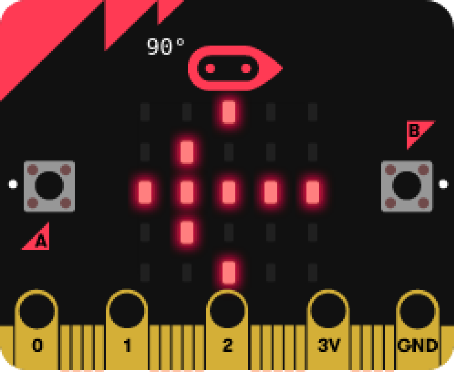
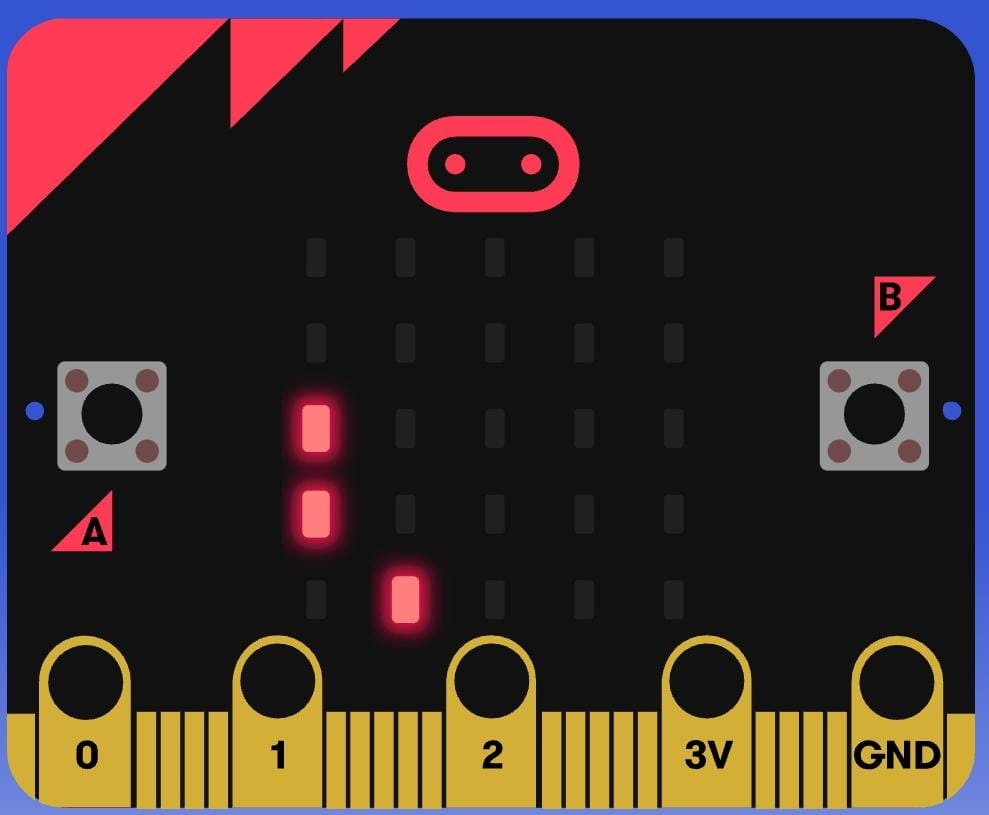
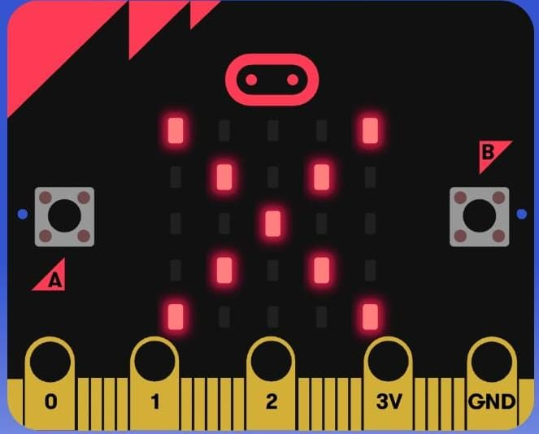

Paso 1: Preparación del Microbit
Asegúrate de tener un dispositivo Microbit conectado a tu computadora. Carga el código del juego en el Microbit utilizando la plataforma de programación MakeCode.

Paso 2: Configuración del Juego
El dinosaurio representado en la matriz LED saltará cada vez que presiones el botón "A". Evita los obstáculos para ganar puntos.
Paso 3: Cómo Jugar
Presiona el botón "A" para hacer que el dinosaurio salte cuando aparezca un obstáculo. El juego se vuelve más difícil a medida que avanzas, ¡así que prepárate para reaccionar rápido!
Paso 4: Fin del Juego
El juego termina cuando el dinosaurio no puede evitar un obstáculo. ¡Intenta obtener la mejor puntuación posible!
